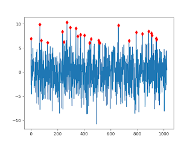

Zaman Serilerinde Tepe Noktası Bulmak (Peak Detection)
Matlab / Octave kullananlar zaman serisi tepe noktası analizinde peakutils adlı bir aracı kullanıyorlar. Bu kod Python'a taşınmış,
https://github.com/atjacobs/PeakUtils
Kod içinden gerekli fonksiyonu çıkarttık,
import numpy as np
def indexes(y, thres, min_dist):
thres *= np.max(y) - np.min(y)
dy = np.diff(y)
peaks = np.where((np.hstack([dy, 0.]) < 0.)
& (np.hstack([0., dy]) > 0.)
& (y > thres))[0]
if peaks.size > 1 and min_dist > 1:
highest = peaks[np.argsort(y[peaks])][::-1]
rem = np.ones(y.size, dtype=bool)
rem[peaks] = False
for peak in highest:
if not rem[peak]:
sl = slice(max(0, peak - min_dist), peak + min_dist + 1)
rem[sl] = True
rem[peak] = False
peaks = np.arange(y.size)[~rem]
return peaks
Parametreler tepe noktalarının arasında en az ne kadar mesafe, ayrıca noktaların en az ne kadar genliğe (y yönünde) sahip olmaları gerektiği. Eldeki bir veri üzerinde indexes(d,thres=0.3,min_dist=3) çağrısı sonrası
Java için benzer bir çağrı, alttaki kütüphaneden,
https://github.com/JorenSix/TarsosDSP
import java.util.*;
public static LinkedList<Integer> indexes(double[] data,
int width,
double threshold,
double decayRate,
boolean isRelative) {
LinkedList<Integer> peaks = new LinkedList<Integer>();
int maxp = 0;
int mid = 0;
int end = data.length;
double av = data[0];
while (mid < end) {
av = decayRate * av + (1 - decayRate) * data[mid];
if (av < data[mid])
av = data[mid];
int i = mid - width;
if (i < 0)
i = 0;
int stop = mid + width + 1;
if (stop > data.length)
stop = data.length;
maxp = i;
for (i++; i < stop; i++)
if (data[i] > data[maxp])
maxp = i;
if (maxp == mid) {
if (overThreshold(data, maxp, width, threshold, isRelative,av)){
peaks.add(new Integer(maxp));
}
}
mid++;
}
return peaks;
}
public static boolean overThreshold(double[] data, int index, int width,
double threshold, boolean isRelative,
double av) {
int pre = 3;
int post = 1;
if (data[index] < av)
return false;
if (isRelative) {
int iStart = index - pre * width;
if (iStart < 0)
iStart = 0;
int iStop = index + post * width;
if (iStop > data.length)
iStop = data.length;
double sum = 0;
int count = iStop - iStart;
while (iStart < iStop)
sum += data[iStart++];
return (data[index] > sum / count + threshold);
} else
return (data[index] > threshold);
}
Güzel. Fakat bu tepe noktası çağrıları toptan şekilde çalışıyor, verinin tamamını alıyorlar, fonksiyon verinin tamamına bakiyor. Soru şu: canlı zamanda, sürekli akan veri üzerinde tepe noktası nasıl buluruz? En son N tane noktayı hatırlamak mümkün olsun diyelim (ama verinin tamamı değil).
İlk akla gelebilecek basit çözüm bir genlik alt limiti ymin'i aşan tepe noktasını seçmek, bu nokta ardından xmin kadar bekleriz, ylim'den üstte yeni bir tepe nokta var ise, bunu da alırız, böyle devam ederiz. Fakat basit çözüm biraz aceleci aslında, belki xmin sonrası bulunan tepe noktasına çok yakın "daha iyi (yani daha yukarıda)" bir nokta daha var, tipik olarak hemen bir önceki noktanın üzerine atlamak istemiyoruz, daha yukarıdaki noktayı istiyoruz.
Bu durum için yine ilk akla gelen çözüm xmin'i arttırmak olabilir, fakat global bir parametreyle bu şekilde oynamak çoğunlukla iyi sonuç vermez, büyük ihtimalle analizin diğer yerlerinde başka yanlışlara yol açar.
Çözüm yaklaşımı değiştirip veriler için bir kayan pencere kullanmak. Tepe noktası "en son N öğenin içinde orta noktanın maksimum olması demek" diye bir tanım getirebiliriz. Kayan pencere için CircularFifoQueue kullanılabilir, bu bir org.apache.commons sınıfı, bir tür sınırlandırılmış kuyruk (queue). N öğe tutsun diye tanimlarsak N öğe ardından verilen N+1'inci öğe için 1. öğe dışarı atılır. O zaman tepe noktası bulan kod şöyle olabilir
import java.io.*;
import java.util.*;
import java.util.Queue;
import org.apache.commons.collections4.queue.CircularFifoQueue;
public class TestPeak {
public static class PeakFinder {
double xmin = 0;
double ymin = 0;
int mid = 0;
CircularFifoQueue idxs = null;
CircularFifoQueue vals = null;
// "null" olmayan degeri temsil etmek icin kullaniyoruz
// elinde process'e verecek id'si olmayan cagrilar icin
// kullanisli olabilir
public static int DUMMY = 1;
public PeakFinder(int xmin, double ymin){
this.xmin = xmin;
this.ymin = ymin;
idxs = new CircularFifoQueue(xmin);
vals = new CircularFifoQueue(xmin);
this.mid = (int)vals.size() / 2;
}
// process hem id hem deger aliyor, fakat id aslinda
// tutulup oldugu gibi geri veriliyor, cagri yapana
// yardimci olmasi icin bunu yapiyoruz, fonksiyonun ic
// isleyisi icin onemli degil.
public int process(double val, int idx) {
vals.add(new Double(val));
idxs.add(new Integer(idx));
if (vals.size() < xmin) {
return Integer.MIN_VALUE;
}
if (vals.get(mid) > this.ymin && vals.get(mid) == Collections.max(vals)) {
return idxs.get(mid);
}
// Integer.MIN_VALUE null degeri yerine kullanildi,
// cunku int yerel tip, obje degil
return Integer.MIN_VALUE;
}
}
public static void main(String[] args) throws Exception{
java.util.Random r = new java.util.Random();
r.setSeed(0);
double samples[] = new double[1024];
for ( int n = 0; n < samples.length; n++ )
{
double noise = r.nextGaussian() * Math.sqrt(10);
samples[n] = Math.sin( n * Math.PI / 18. ) + noise;
}
// uretilen veriyi dosyaya yazalim, ustteki Python kodu ayni veriyi
// kullanacak.
PrintWriter writer = new PrintWriter("out.txt");
for (int i = 0; i < samples.length; i++) writer.println(samples[i]);
writer.close();
ArrayList res = new ArrayList();
PeakFinder pf = new PeakFinder(6, 6.0);
for ( int n = 0; n < samples.length; n++ ) {
int idx = pf.process(samples[n], n);
if (idx > Integer.MIN_VALUE) res.add(idx);
}
System.out.println(""+res );
}
}
Sonuc,
Tekrarlamak gerekirse: tepe noktası "sağında ve solunda vadiler olan orta noktadır" tanımı üzerinden sonucu aldık. Pencereyi sürekli kaydırıyoruz (daha doğrusu her yeni veriyi N tane sınırlı öğe içerebilen bir kuyruğa sürekli sondan ekliyoruz), ve bu sırada orta noktanın maksimum olup olmadığına bakıyoruz.
